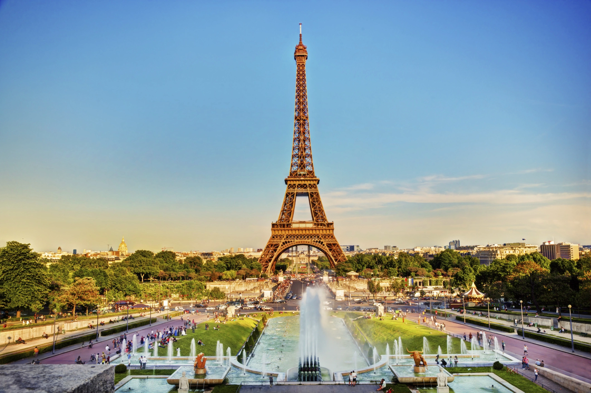

Paris
Conhecida como Cidade Luz, Paris é uma cidade importante na história do mundo. Já foi considerada a mais importante cidade de todo o mundo ocidental. No século XVII, era a capital da maior potência política europeia; no século XVIII, era o centro cultural da Europa e, no século XIX, era a capital da arte e do lazer, o berço da Belle Époque.
Símbolo da cultura francesa, a cidade de Paris que conhecemos hoje é assim por causa de Napoleão III e de Haussmann. Ambos foram responsáveis pelo projeto de urbanização e modernização de uma cidade de estrutura medieval, construções antigas e insalubres. Hoje, a arquitetura parisiense, as avenidas, parques e monumentos atraem quase 30 milhões de visitantes por ano.
A cidade de Paris também é a capital econômica e comercial da França, onde os negócios da Bolsa e das finanças se concentram. Além disso, graças a sua geografia, é um hub da rede de transporte aéreo e ferroviário da França e da Europa.
Desenhada às margens do rio Sena, a capital francesa está dividida em vinte arrondissements (bairros). Um detalhe curioso sobre os arrondissements é que se você olhar com mais atenção vai notar que o mapa tem o formato de um escargot. Desta forma, a distribuição dos bairros começou com 1° arrondissement no centro do mapa e os demais espalhados em formato espiral.
CIDADE DE ORIGEM: